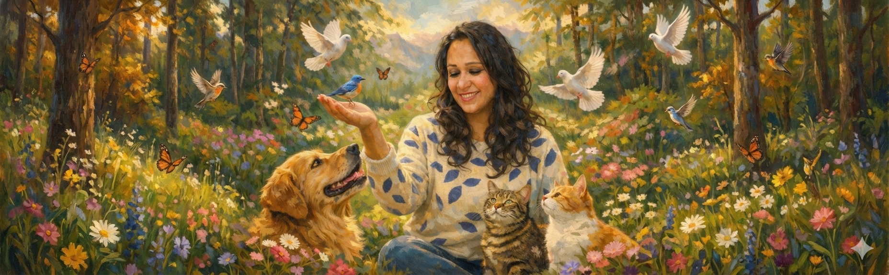
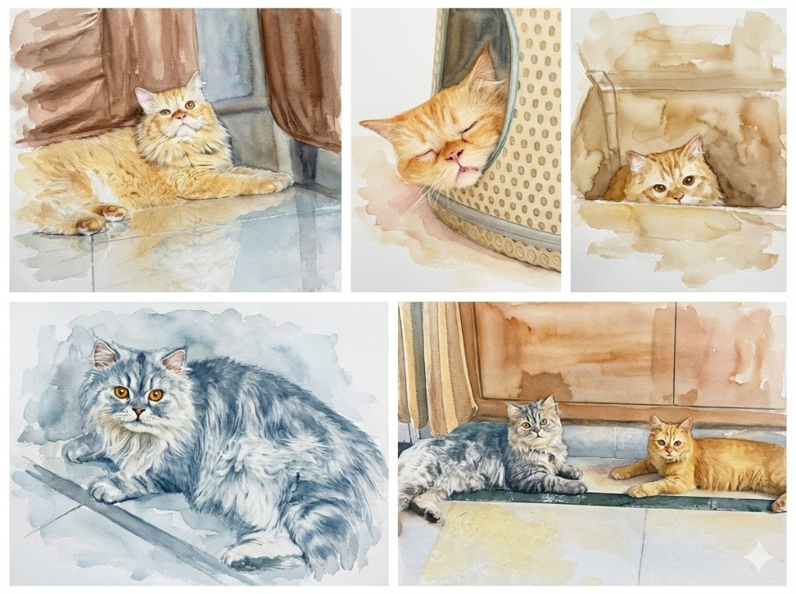

About the Communicator
From childhood curiosity to sacred calling — the story of how I learned to listen to the whispers that connect all living beings.
The Beginning
Since I was a child, my world has been a tapestry of paws, wings, and scales. I grew up in a home where animals weren't just "pets" — they were family members. My parents taught me by example that every creature deserves utmost importance, and their preferences were always our priority.
Yet, for a long time, I believed there was a silent barrier between us. I loved them deeply, but I didn't realize that a dialogue — a true, soul-to-soul conversation — was possible.
I spent years observing, wondering, feeling that something profound was being communicated in their eyes, in their gestures, in the quiet moments we shared. I just didn't know how to hear it yet.
The Moment Everything Changed

My transition from "animal lover" to "animal communicator" was a gift from my elder son, Mario, a Siberian cat. The moment I first experienced a telepathic connection with him, I was moved to tears.
I had always loved him, but suddenly, that love turned into a profound, reverent respect. He showed me that they have so much to say; we just have to learn how to listen.
Following this life-changing moment, I enrolled in a formal course to hone my skills. During this time, we were adopted by our younger son, Oreo. While I was studying, Oreo became my greatest teacher and practice partner, helping me navigate the nuances of telepathic communication.
"They have so much to say. We just have to learn how to listen."
Expanding the Connection
Today, my life is a constant conversation. I talk to my boys every day to understand their feelings and needs. But this gift extends far beyond my own home.
I have found beauty in communicating with the "unseen" residents of our world — the lizards, squirrels, sparrows, spiders, and ants. There is no creature too small for a conversation. Every being has a voice, a perspective, a wisdom to share.
Perhaps most healing of all is the ability to communicate with those who have crossed the Rainbow Bridge. Even though they have left their physical forms, they continue to guide me, proving that the bond of love is never truly broken.
"There is no creature too small for a conversation. Every being has a voice, a perspective, a wisdom to share."
My Purpose
I am in this space to offer compassion to both humans and other species. I hold a sacred space to help you hear what your companions are truly saying, aiding in your own spiritual realignment.
Whether they are by your side or watching over you from the light, I am here to help you rediscover the connection that has always existed.
This work is not about me. It is about honoring the voices that have been waiting to be heard, the bonds that deserve to be acknowledged, and the love that transcends every boundary we thought existed.
"I am simply the bridge — a medium to connect you with the companions who have been speaking to your heart all along."
— Prasha Singh, Animal CommunicatorLet me be the bridge between you and your beloved companion. Together, we will hear what they have been waiting to tell you.